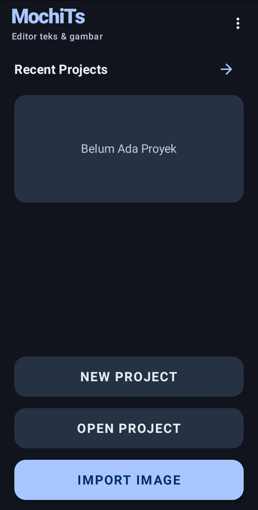
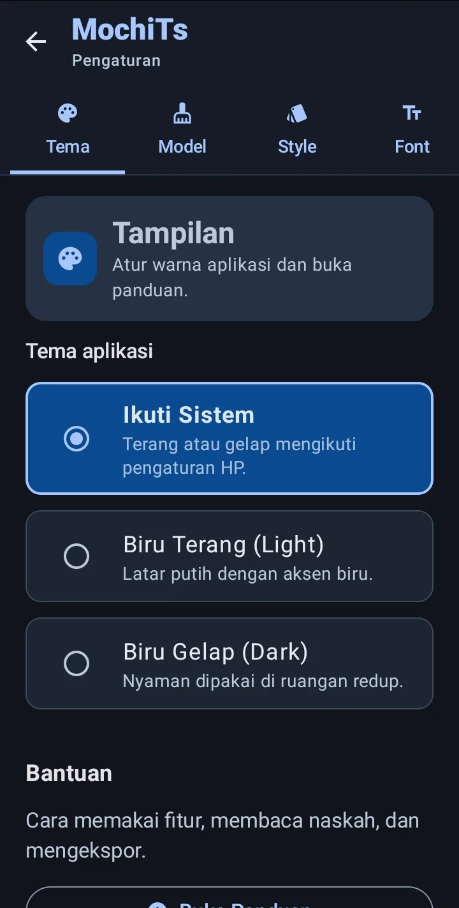

Mulai & instalasi
Dari memasang APK sampai proyek pertamamu siap diedit. Tanpa akun dan tanpa langganan.
Daftar isi
Memasang aplikasi
MochiTs adalah aplikasi Android yang berjalan langsung di HP, bukan versi web. Minimal Android 10. Ada dua cara mendapatkan file pemasangnya (APK):
- Untuk pengguna: buka GitHub Actions, pilih build terbaru yang bertanda centang hijau, lalu unduh
app-debug. Perlu masuk ke akun GitHub. - Untuk pengembang: unduh kode sumber, lalu jalankan
./gradlew assembleDebugdengan JDK 17. APK muncul diapp/build/outputs/apk/debug/.
Membuat proyek pertama
Home menampilkan folder dan proyek terbaru. Kartu folder memakai cover dan jumlah proyek; ikon panah di kanan judul membuka daftar lengkap.
Isi nama, lebar, dan tinggi kanvas dalam piksel. Centang Kanvas Transparan bila ingin latar kosong; jika tidak, pilih warna latar.
Kamu bisa langsung membuat kanvas kosong, atau mengimpor gambar dari galeri sebagai halaman pertama.
Editor terbuka dengan deretan alat di kiri, area gambar (kanvas) di tengah, dan panel properti untuk lapisan yang sedang dipilih.
Mengenal Home
Home adalah pusat proyek. Beberapa elemen penting:

- 1Recent Projects — kartu folder dan proyek terbaru. Sekarang masih kosong ("Belum Ada Proyek").
- 2Menu tiga titik — berisi Impor ZIP, Kelola folder, dan Pengaturan.
- 3New Project — membuat kanvas baru; nama, lebar, dan tingginya kamu tentukan sendiri.
- 4Import Image — memilih gambar dari galeri sebagai halaman; Open Project di antaranya membuka file
.mtslama.
| Elemen | Fungsi |
|---|---|
| Recent Projects | Deretan kartu folder dan proyek terbaru. Geser ke samping untuk melihat item lain. |
| Kartu folder | Menampilkan cover dan jumlah proyek. Ketuk untuk membuka isinya. Urutan mengikuti nama file secara alami, jadi 2 muncul sebelum 10. |
| Panah kanan judul | Membuka daftar semua proyek. Setiap folder tampil sebagai satu kartu; isinya baru muncul setelah kartu dibuka. Tekan lama proyek atau folder untuk memilih. Untuk proyek, aksi pindahkan dan ekspor ada di menu tiga titik di bar atas. |
| Menu tiga titik | Berisi Impor ZIP, Kelola folder, dan Pengaturan. Impor ZIP membuka arsip gambar atau subfolder; Kelola folder untuk membuat, mengganti nama, dan menghapus folder. Proyek di folder yang dihapus tidak ikut terhapus. |
| New Project | Membuat kanvas proyek baru. |
| Open Project | Membuka file proyek .mts yang sudah pernah disimpan. |
| Import Image | Memilih gambar dari galeri. Jika memilih lebih dari satu, MochiTs otomatis membuatkan folder. |
| Tekan lama kartu | Masuk mode pilih. Ketuk kartu lain untuk menambah pilihan, lalu hapus beberapa proyek atau folder sekaligus. Hapus folder tidak menghapus proyek di dalamnya. |
Mengenal Editor

- 1Kanvas — halaman aktif; cubit untuk perbesar, geser dengan dua jari untuk berpindah halaman.
- 2Bar atas — kembali, undo/redo, dan panel lapisan.
- 3Bar alat bawah — lima pintu masuk: Erase, Text, Effect, Font, dan Style. Seluruh anotasi bab ini mengikuti label di bar ini.
- Kanvas: cubit untuk memperbesar, geser dengan dua jari untuk berpindah. Ketuk dua kali lapisan teks untuk mengedit isinya.
- Toolbar: pilih alat seleksi (brush, eraser, lasso, magic wand), alat teks, atau gambar.
- Panel layer: atur urutan, sembunyikan, kunci, dan hapus lapisan.
- Panel properti: pengaturan untuk lapisan yang sedang dipilih, seperti font, warna, garis tepi, dan jarak.
- Undo/redo: riwayat perubahan tetap tersedia setelah aplikasi ditutup.

- 1Tab pengaturan — Tema, Model, Style, Font, Output, dan Script; tab yang tak terlihat bisa digeser.
- 2Tema aplikasi — Ikuti Sistem, Biru Terang (Light), atau Biru Gelap (Dark).
- 3Bantuan — tombol Buka Panduan membuka dokumentasi ini.
Tiga kebiasaan yang menghemat waktu
- Kelompokkan proyek per judul atau chapter memakai folder sejak awal.
- Simpan Script TL dalam satu file teks, lalu gunakan format script agar balon terisi otomatis.
- Atur jarak huruf dan baris di panel teks sebelum menyalin gayanya ke balon lain.